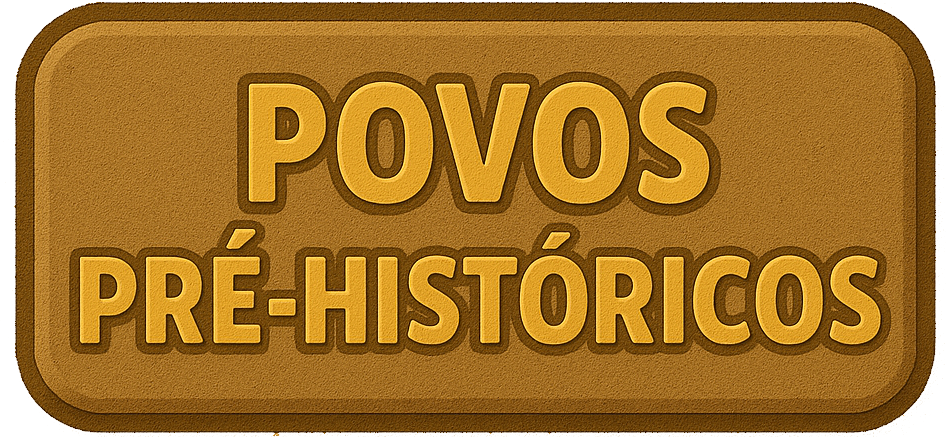
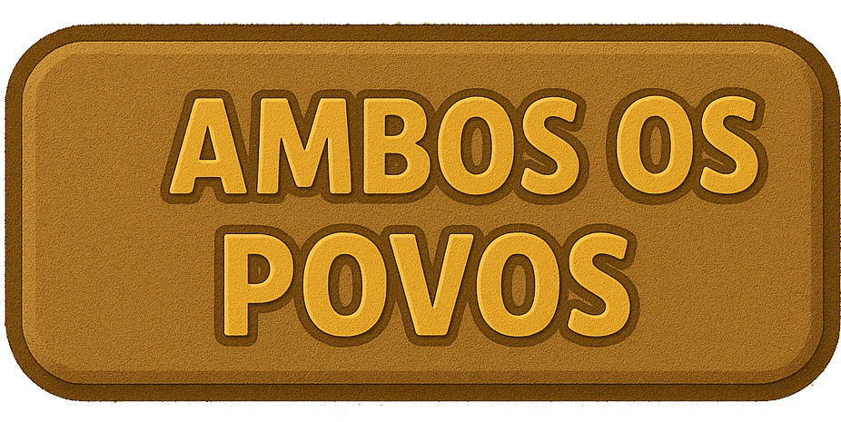
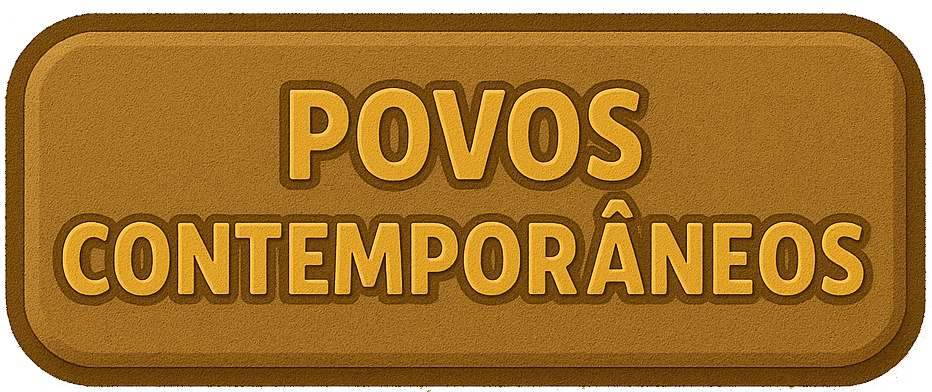
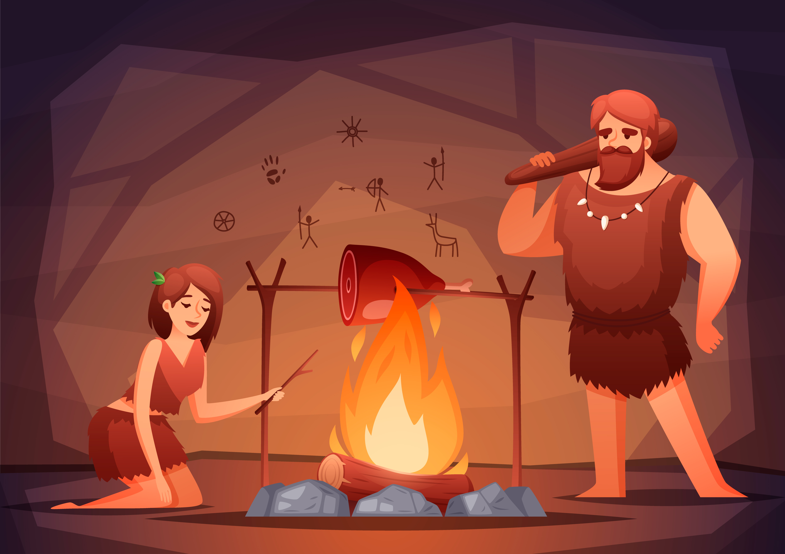

A necessidade de se abrigar do frio, da chuva e de animais é característica de quais povos?



Utilizar a fricção de um graveto em uma cavidade de madeira é uma técnica de produzir fogo, principalmente, dos:
A transição do nomadismo para o sedentarismo ocorreu com o desenvolvimento da agricultura, que significa o cultivo intencional. Esta prática de plantio e colheita é correspondente a:
As pinturas rupestres eram a forma de expressão e comunicação dos:

Os cientistas acreditam que o Homo sapiens era mais inteligente que os demais animais por conta do tamanho de seu cérebro. No grupo de Homo sapiens incluem: